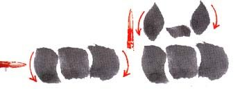
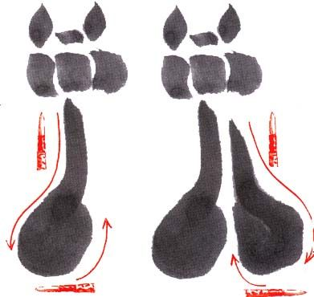
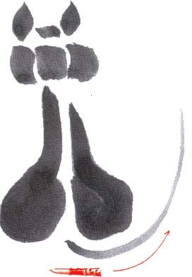
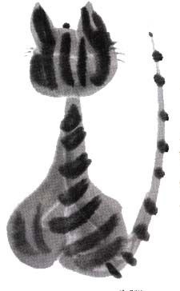
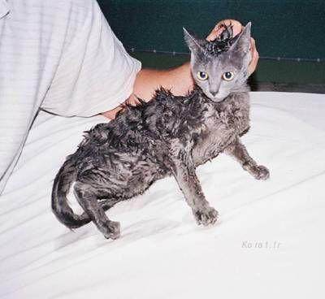
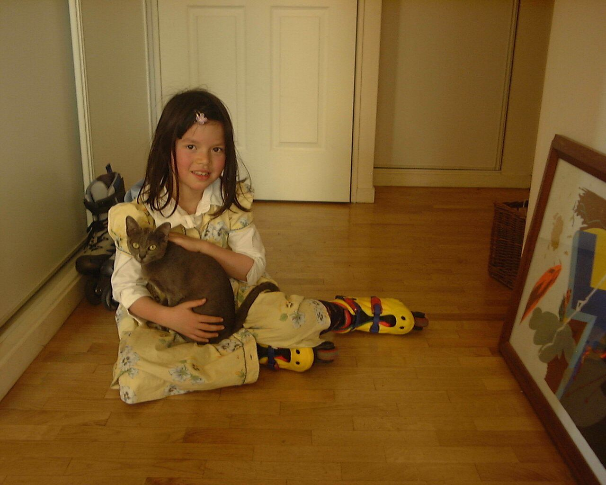

- Agouti (motif) : poils tiquetés ou à bandes alternées ; le motif agouti se trouve également autour des marques tabby, ce qui rend ce dernier visible à l'œil nu.
- Allèle : l'un des membres d'une paire ou d'une série de gènes situés à un endroit précis de chromosomes homologues.
- Allèles multiples : série de trois allèles ou plus, chacun d'eux pouvant se trouver à un locus particulier d'un chromosome ; le système tabby ou le système albinos en sont des exemples.
- Amandes (en) : se dit des yeux en forme allongée ; s'ils sont ovales, leur extrémité située du côté de l'oreille est effilée.
- Arête : rebord vif du nez.
- Autosome : chromosome non associé au sexe de l'individu ; il est par conséquent présent sous forme de paire (diploïde) chez les deux sexes.
- Bases nucléotidiques : un gène se compose de l'enchaînement de quatre bases nucléotidiques : l'adénine (A), la guanine (G), la thymine (T) et la cytosine (C). L'appariement est strict : A avec T ; G avec C. Les différentes combinaisons possibles constituent des messages génétiques qui sont exprimés sous forme d'une molécule d'ARN dit messager, lequel est déchiffré dans la cellule lors de la synthèse de protéines.
- Bonnet d'âne : oreilles droites et rapprochées.
- Brosse (en) : se dit d'une queue particulièrement touffue, "buissonneuse" ; s'applique généralement à une longue queue.
- CAC : Certificat d'Aptitude au Championnat (1er niveau de titre en exposition féline pour un chat adulte)
- CACE : Certificat d'Aptitude au Championnat d'Europe (4ème niveau de titre en exposition féline pour un chat adulte)
- CACIB : Certificat d'Aptitude au Championnat International de Beauté (2ème niveau de titre en exposition féline pour un chat adulte)
- CAGCE : Certificat d'Aptitude au Grand Championnat d'Europe (5ème niveau de titre en exposition féline pour un chat adulte)
- CAGCI : Certificat d'Aptitude au Grand Championnat International (3ème niveau de titre en exposition féline pour un chat adulte)
- Cagneux : se dit d'un chat dont les genoux tendent à s'incurver vers le centre, à la façon des bovins.
- CAGPE : Certificat d'Aptitude au Grand Premior d'Europe (identique au CAGCE mais réservé aux chats neutres)
- CAGPI : Certificat d'Aptitude au Grand Premior International (identique au CAGCI mais réservé aux chats neutres)
- CAP : Certificat d'Aptitude au Premior (identique au CAC mais réservé aux chats neutres)
- CAPE : Certificat d'Aptitude au Premior d'Europe (identique au CACE mais réservé aux chats neutres)
- CAPIB : Certificat d'Aptitude au Premior International de Beauté (identique au CACIB mais réservé aux chats neutres)
- Cassure : indentation du nez à angle droit au niveau de l'arête et entre les yeux.
- Cassure fronto-nasale : point de jonction du museau et du crâne.
- Cat fancy : félinophile. Ce terme s'applique à tous ceux qui sont attirés par les félins domestiques, l'élevage ou les concours. Il existe dans pratiquement tous les pays des organismes officiels où l'on peut s'inscrire. Ces organismes assument les responsabilités suivantes : enregistrer les chats et leur descendance, alimenter une banque de données sur les pedigrees, fournir des juges, des licences pour les concours et les expositions, des clubs charter, etc… Dans certains pays, ces tâches sont accomplies par des clubs privés.
- Cellule : unité fonctionnelle de base de l'organisme.
- Chromosome : minuscule structure en forme de bâtonnet située dans le noyau des cellules et qui contrôle les caractères héréditaires. C'est là que se trouvent les gènes, disposés en ordre linéaire. Chaque être vivant possède un nombre fixe de chromosomes, caractéristiques de l'espèce.
- Cobby (type) : terme qui définit souvent une morphologie courte, ramassée, avec des épaules et une culotte large. Le Korat est de taille moyenne dite semi-cobby, ni compact ni svelte avec un dos légèrement arqué. Il est Puissant, musclé et souple.
- Collier : coloration tabby autour du cou (pas chez le Korat).
- Color point : coloration plus foncée des extrémités (masque, oreilles, pieds et queue).
- Condition : définit l'état de santé physique et mentale du chat. Sont à considérer : le poids, l'état général et la toilette.
- Consanguin (croisement) : les chats sont accouplés entre parents directs ou très proches (parents-enfant ou frères-soeurs). Ces croisements doivent être l'objet de beaucoup d'attention et nécessitent de bonnes connaissances en génétique.
- Creux : région située entre la cage thoracique et les cuisses ; on le détermine en regardant le flanc en coupe sagittale..
- Culotte : arrière-train.
- Dessin : un chat en neuf traits
2. Orientez la pointe du pinceau vers le haut de la feuille pour peindre les oreilles. Tournez la base de la brosse d'un côté en essayant de déplacer le moins possible la pointe.

3. La pointe toujours dirigée vers le haut, Partez du cou et descendez le pinceau en gardant la pointe au centre du trait. arrivé à l'arrière-train, tournez la pointe vers l'extérieur du trait et arrondissez celui-ci en cercle.
4. Ajoutez la seconde moitié du corps en inversant la direction du cercle. Notez que ce trait commence un peu plus bas de sorte que le corps n'est pas régulier.

5.Peignez la queue d'un trait balayé remontant de la base du dos.

6. Ajoutez des rayures à l'encre foncée, des moustaches, un point pour le nez.

- Diploïde : cellule ayant deux jeux complets de chromosomes.
- Dôme (en) : se dit d'un front bombé ou faisant saillie.
- Dominance : situation dans laquelle l'un des chromosomes d'une paire d'allèle s'exprime complètement (dominance totale) ou partiellement (dominance partielle), tandis que l'autre est génétiquement silencieux. Le terme s'applique également au trait produit par un gène dominant.
- Dominance partielle ou totale : état hétérozygote où le phénotype est intermédiaire entre celui des deux homozygotes.
- Double fourrure : sous poil épais recouvert d'une couche de poils plus longs et épais. Les poils de barbe sont de même longueur que les poils de garde. Un bon exemple de double fourrure est fourni par le Bleu de Russie alors que le Korat n'a pas de sous poils..
- Duvet : pilosité secondaire, douce et bouclée.
- Duvet auriculaire : touffes de poils poussant horizontalement au niveau des oreilles.
- Écartement large : se dit de l'écart entre les oreilles chez certaines races, supérieur à la longueur d'une oreille (pas chez le Korat).
- Enzyme : grosse molécule, de nature totalement ou partiellement protéique, qui règle ou provoque une transformation (de type métabolique).
- Extrusion : projection de la partie inférieure d'un ensemble (voir protrusion).
- Fantôme (marques) : légères marques tabby observées chez certains chats unicolores, surtout lorsqu'ils sont jeunes. Ces marques pénalisent les chatons et ne sont pas autorisées chez le jeune chat Korat.
- Flamme : marque située entre le milieu du front et le nez chez certains chats. Pas chez le Korat.
- Gamète ou cellule germinale : cellule sexuelle destinée à fusionner avec le gamète de l'autre sexe lors de la reproduction sexuée. L'ovule est le gamète femelle, le spermatozoïde est le gamète mâle.
- Gants : terme désignant la couleur d'un blanc immaculé des pattes antérieures de certains chats (pas les Korats).
- Garrot : point le plus haut du dos, situé entre les omoplates.
- Gène : déterminant d'un caractère héréditaire. Segment particulier d'ADN, situé sur le chromosome. Unité de l'hérédité, contrôlant la croissance, le développement et le fonctionnement de l'organisme.
- Guêtre : coloration blanche de l'extrémité des pattes postérieures (pas chez le Korat).
- Hétérozygote : pour un caractère génétique donné, se dit d'un individu ou d'une cellule possédant deux gènes différents reçus de chacun des parents. La paire d'allèle est ainsi composée d'un gène dominant et d'un gène récessif.
- Homologues (chromosomes) : chromosomes appariés, chacun provenant d'un des parents.
- Homozygote : pour un caractère génétique donné, se dit d'un individu ou d'une cellule possédant deux gènes identiques au sein d'une paire d'allèle.
- Impairs (yeux) : particularité de certaines races de chats ayant un oeil bleu et l'autre cuivre (ou orange). Ceci n'arrive jamais chez le Korat.
- Inhibiteur (gène) : on pense que ce gène est responsable de l'inhibition de la couleur ; il serait donc responsable du tipping et des variétés argentées chez certaines races de chats (jamais chez le Korat).
- Iris : disque coloré entourant la pupille. L'iris se distingue en une partie avant et une partie arrière. Du pigment peut ou non se déposer dans l'iris, déterminant ainsi sa couleur.
- Lavage :

- Létal (gène) : gène dont l'effet phénotypique est si radical qu'il entraîne la mort du porteur. Divers gènes létaux peuvent provoquer la mort à différents stades du développement, depuis la fécondation jusqu'à un âge avancé. Ces gènes peuvent être dominants, partiellement dominants ou récessifs.
- Liaison génétique : groupement de gènes différents sur le même chromosome, assez proche physiquement pour être transmis comme une seule entité.
- Locus : position ou emplacement occupé sur un chromosome par un gène ou l'un de ses allèles (pluriel : loci).
- Malocclusion ou dysgnathisme : mauvais ajustement de la denture supérieure et inférieure, conduisant à un défaut de fermeture des mâchoires.
- Maltesing : agrégation de pigment au sein du follicule pileux (voir dilution).
- Masquage ou épistasie : action de masquer l'effet phénotypique d'un membre (ou des deux membres) d'une paire d'allèles par un gène d'une paire différente. Le gène masqué est dit hypostatique.
- Masque : région faciale de coloration plus sombre, incluant l'emplacement des moustaches et pouvant aller jusqu'aux oreilles chez certains chats (pas le Korat).
- Mélanine : principal pigment assurant la coloration du poil et de la peau. On distingue l'eumélanine, ou mélanine vraie, et la phéomélanine.
- Modificateurs : polygènes altérant l'effet d'un gène majeur.
- Mouchetage : poils de la "mauvaise" couleur dispersés dans la fourrure.
- Moucheté : voir tacheté.
- Mutation : modification soudaine du génotype, sans rapport avec l'ascendance d'un individu.
- Noyau : centre de commandement de la cellule ; contient les chromosomes (ADN).
- Oriental (regard) : inclinaison des yeux par rapport à une ligne horizontale imaginaire parallèle au sommet du front. Le bord externe des yeux pointe vers le centre de la base des oreilles.
- Oriental (type) : tête longue et triangulaire, corps longiligne et mince, pattes allongées et fines, longue queue en forme de fouet.
- Pedigree : l'arbre généalogique d'un animal donné ; le document attestant de ses origines.
- Phénotype : apparence physique d'un individu dépendant de son équipement génétique (génotype).
- Polygène : ensemble de deux paires d'allèles (ou plus), avec un effet cumulatif présumé, régissant des caractères quantitatifs tels que la taille, la pigmentation, l'intelligence. Si leur fonctionnement est simultané, un petit groupe de gènes peut produire des caractères physiques spécifiques.
- Pool génétique : équipement génétique d'un individu donné, par rapport aux caractères considérés.
- Porteur : individu hétérozygote comprenant dans son stock génétique, par exemple, un gène récessif.
- Protusion : dépassement d'une partie supérieure par rapport à une partie inférieure, par exemple d'une mâchoire sur l'autre (promandibule).
- Rayures : marques tabby (pas chez le Korat pure race).
- Récessif : désigne un gène qui, au sein d'une paire d'allèles, ne s'exprime pas (en raison de la présence de l'allèle dominant). Ce terme s'applique aussi, par extension, au caractère contrôlé par le gène. Normalement, les gènes récessifs ne peuvent s'exprimer qu'à l'état homozygote.
- Recourbées (oreilles) : oreilles courbées vers l'avant. Ce phénotype résulte de l'effet d'un gène dominant qui altère la structure du cartilage. Ceci ne doit pas être chez un vrai Korat.
- Reine : chatte ayant eu au moins une portée.
- Robe (composition de la) : une robe normale se compose de trois types de poils : les poils de garde, les soies ou poils de barbe, le sous-poil ou duvet.
- Sous-poil : le véritable sous-poil est le duvet laineux qui se trouve sous les poils de garde.
- Standard : ensemble de règles définissant la morphologie et/ou la couleur idéales d'une race. Les différents standards sont élaborés par un comité et font l'objet d'un contrôle de la part de la division ad hoc. Un standard définissant un idéal, il est peu probable de voir un chat remplissant tous les critères. Le rôle d'un juge est d'évaluer (mentalement) la conformité de chaque chat à ces règles : type, couleur. Les standards varient parfois d'un pays à l'autre.
- Stérilisation : opération consistant à castrer un mâle ou à pratiquer l'ablation des ovaires chez la femelle.
- Stop : changement de direction, légère déclivité, concavité se produisant au niveau de la cassure fronto-nasale, sous la ligne reliant les deux yeux. Le stop peut être imperceptible ou au contraire très prononcé.
- Tabby (motif) : se compose du dessin tabby proprement dit et du motif agouti (tiquetage) surajouté. Motifs que l'on trouve : tabby tiqueté, tigré, tacheté ou classique. Les chats porteurs de gènes non domestiques peuvent présenter des rosettes.
- Tara verte : une chatte Korat qui a fait parler d'elle…

- Thermolabile : détruit par la chaleur. C'est le cas de certaines substances, comme les enzymes, qui perdent leurs propriétés particulières une fois chauffées à 55°C ou plus.
- Troisième articulation : équivalent du point de jonction entre les phalanges et les métacarpes chez l'homme.
À lire également pour tout savoir sur la race :